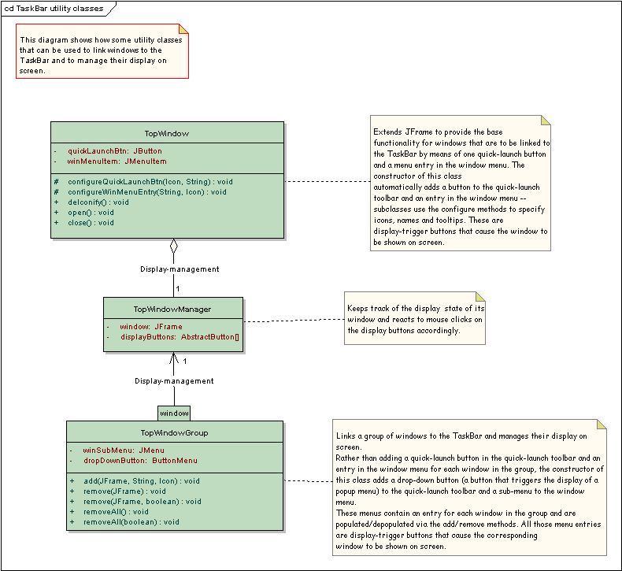

The following diagram shows the classes that provide the taskbar service and their relationships:
|
The following diagram shows how some utility classes that can be used to link windows to the TaskBar and to manage their display on screen:
|  |
The following diagram shows how the display state of a top window is managed by the TopWindowManager:
 |